TYLKO W GRUDNIU! 3 pokoje PREMIUM | Sauna | Taras 20 m²
, Warszawa Targówek
1 279 200 PLN
75.25 m2
3 pokoje
1 piętro
Sprzedajemy wyjątkowe, dopracowane w każdym detalu mieszkanie na nowoczesnym osiedlu Wilno (Targówek), które zostało wykończone dla siebie, a nie pod sprzedaż. To propozycja dla osób, które szukają komfortu, przestrzeni i jakości, a nie kompromisów.
To mieszkanie naprawdę się wyróżnia
Już od progu czuć, że nie jest to standardowa oferta:
- Prywatna sauna dla 2 osób z prysznicem typu deszczownica – idealna na wieczorny relaks po pracy
- Duży taras ok. 20 m² – świetna przestrzeń na kolacje, spotkania z bliskimi lub spokojne wieczory
- Klimatyzacja w każdym pokoju – pełen komfort przez cały rok
- Dwustronna ekspozycja (wschód–zachód) – dużo naturalnego światła i możliwość przewietrzenia mieszkania
- Drewniane podłogi – ciepło naturalnego materiału i wysoka estetyka
- Kuchnia na wymiar z kamiennym blatem, wysokiej klasy AGD (Bosch, Electrolux), lodówką na wino oraz piekarnikiem parowym
- Autentyczna ceglana ściana w salonie (z pojedynczych elementów, nie płytek) + ściana z efektem betonu
- Zabudowy stolarskie na wymiar w kuchni, łazience i przedpokoju – maksymalna funkcjonalność i spójny design
Układ mieszkania
- przestronny salon z aneksem kuchennym,
- 2 sypialnie,
- łazienka z wanną,
- oddzielna sauna z prysznicem,
- taras ok. 20 m² + balkon,
- funkcjonalny przedpokój.
Dodatkowo
- 2 miejsca postojowe w garażu podziemnym - 80,000 zł
- komórka lokatorska ok. 3 m² - 15,000 zł
Osiedle i lokalizacja
Zamknięte, zadbane osiedle z:
- ochroną,
- placem zabaw,
- rowerownią / wózkownią,
- zielonym patio i regularnym sprzątaniem części wspólnych.
W bezpośredniej bliskości:
- SKM Wilno – jeden przystanek (ok. 4 min) do metra Wileńska,
- szybki dojazd do centrum,
- sklepy, usługi, restauracje, tereny spacerowe.
Dla kogo jest to mieszkanie?
Dla osób, które:
- chcą mieszkać komfortowo od pierwszego dnia,
- cenią jakość, przestrzeń i detale,
- szukają czegoś więcej niż "ładne 3 pokoje".
BEZPOŚREDNIO TYLKO DO KOŃCA GRUDNIA. Od stycznia będzie sprzedawane przez agencję.
We speak English / Говорим по-русски.


 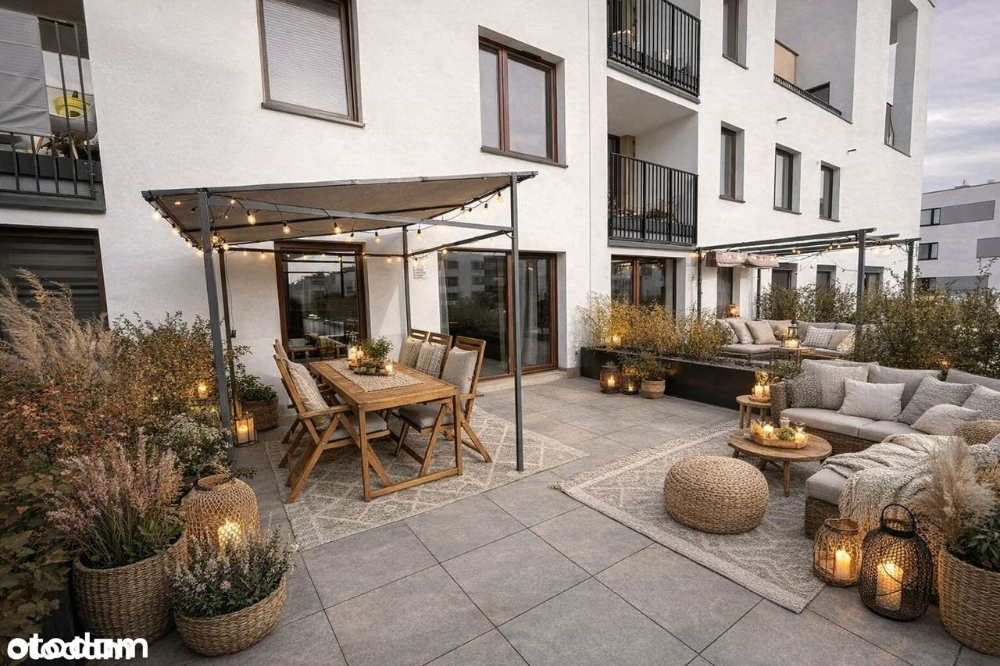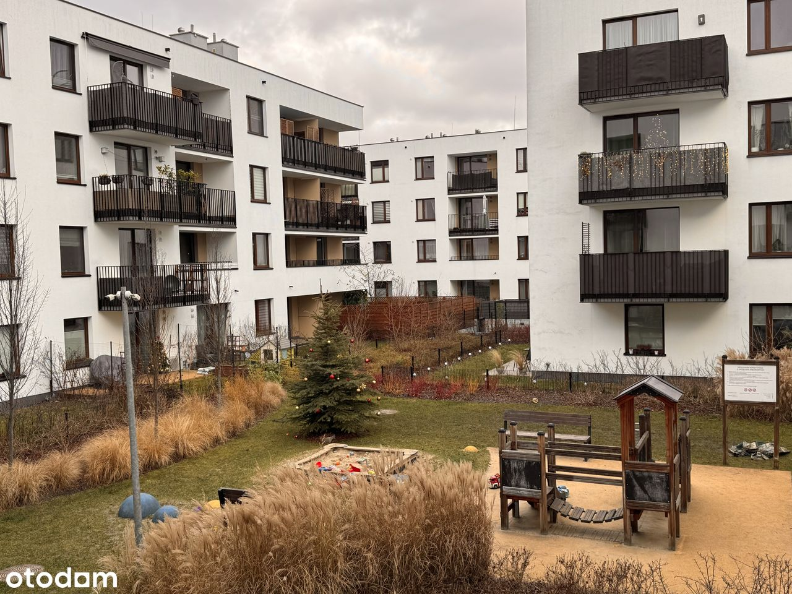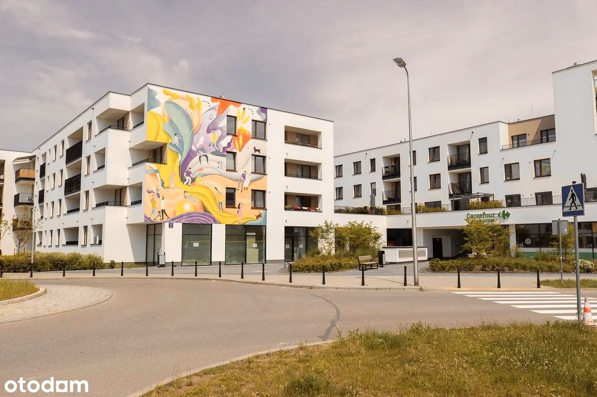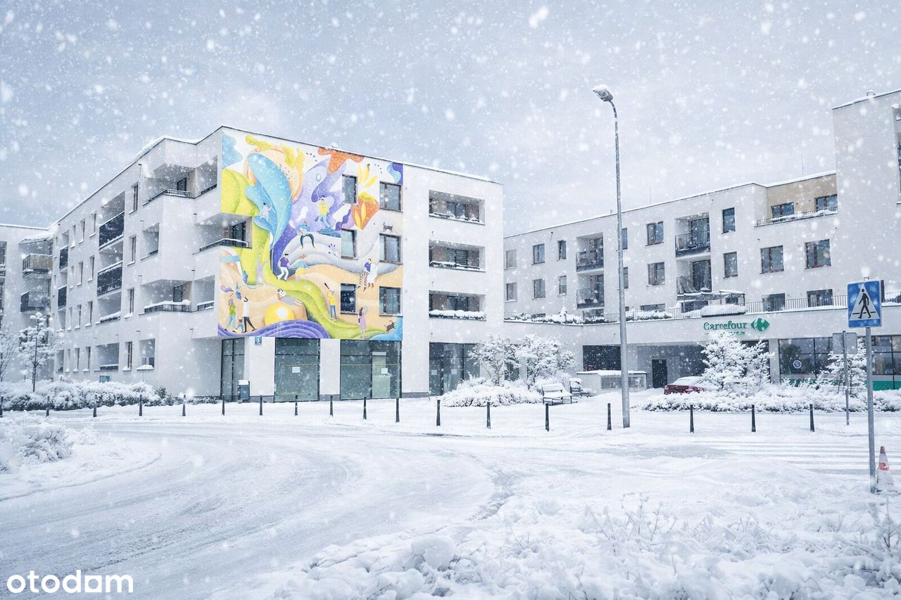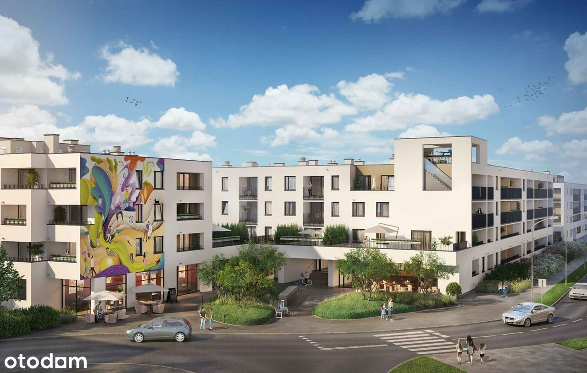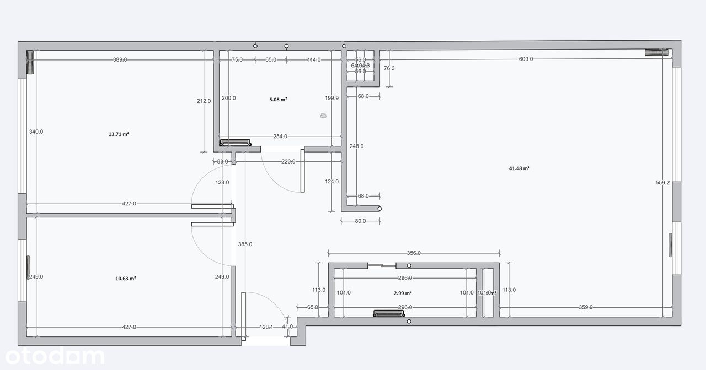
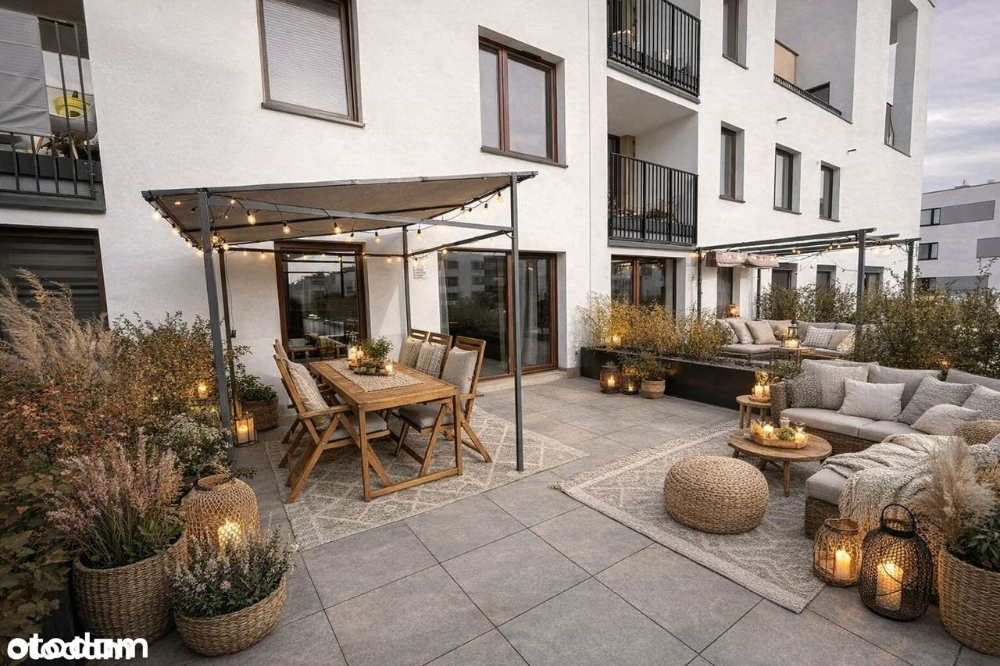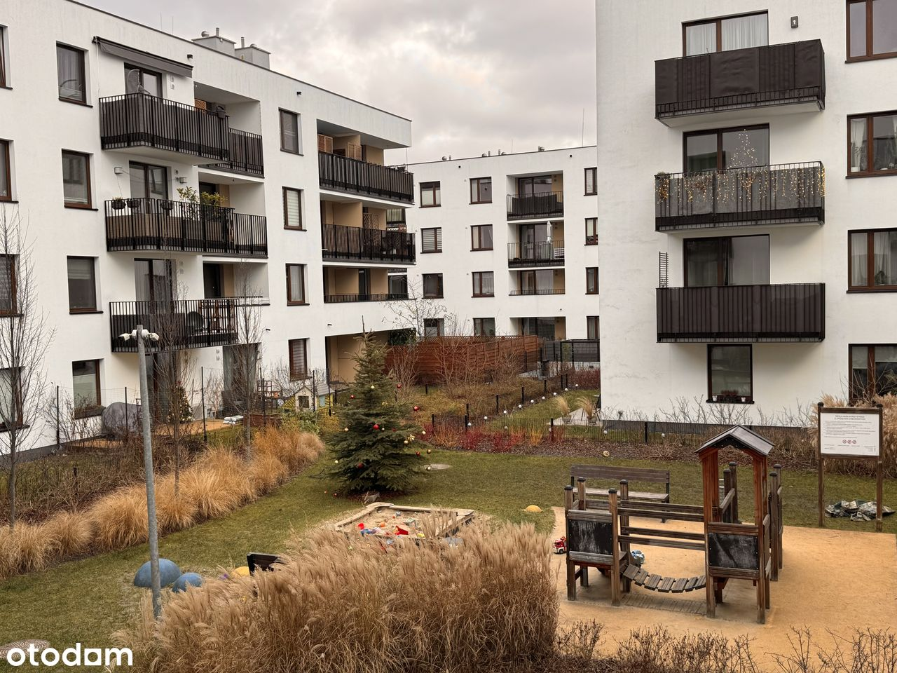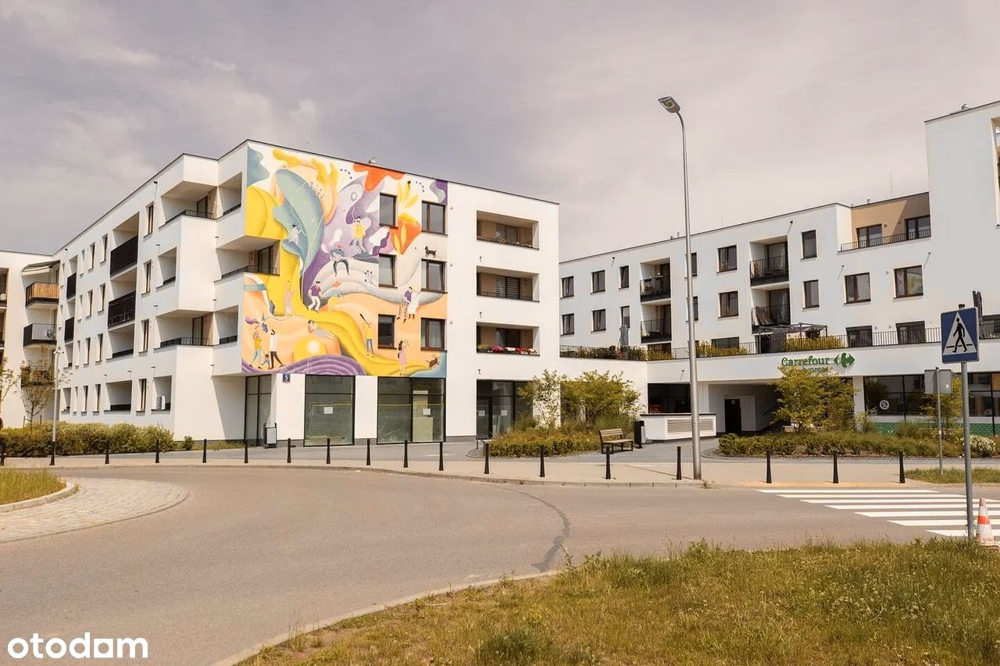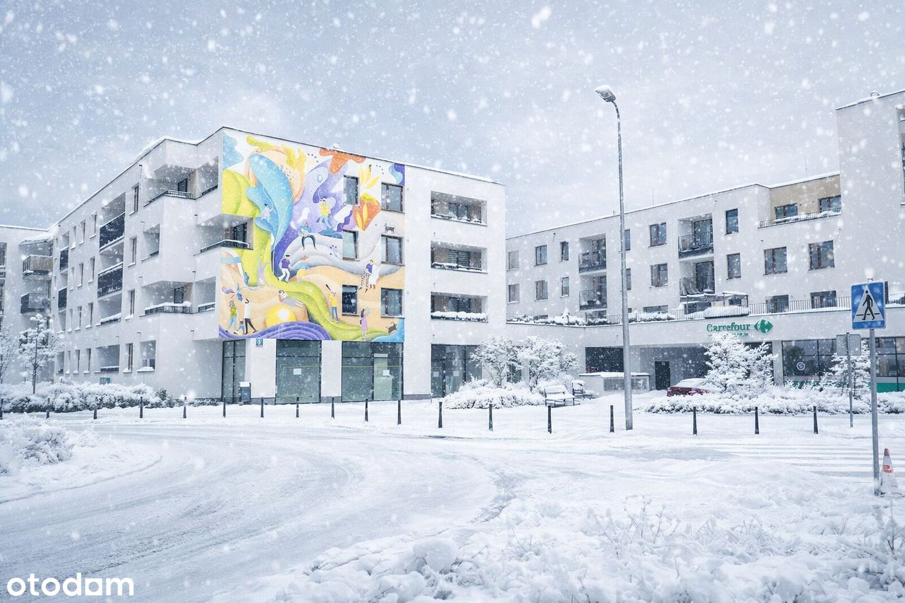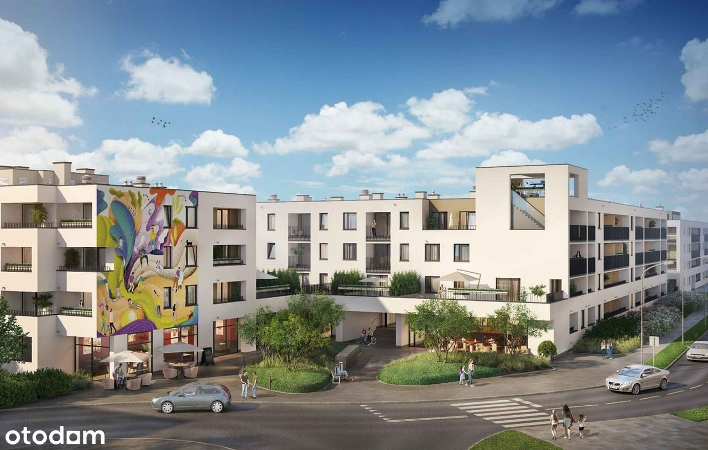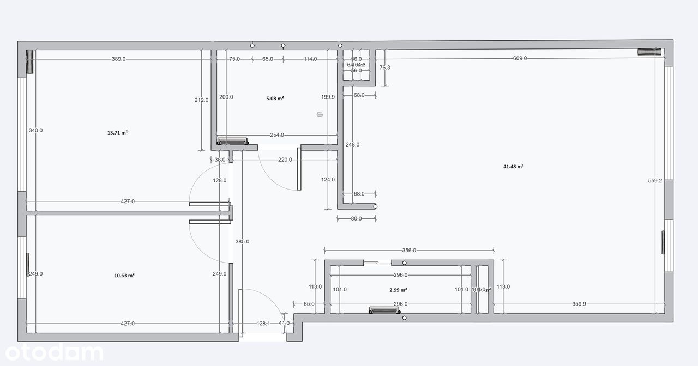